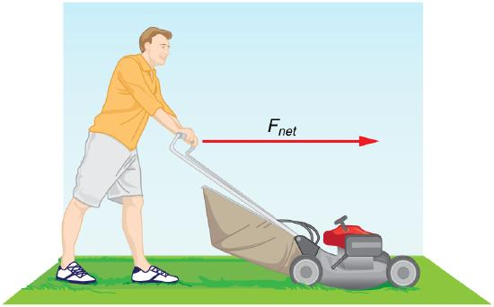
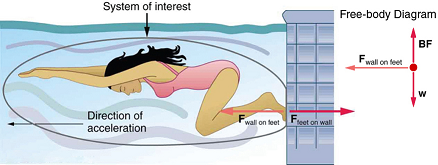

Motion draws our attention. Motion itself can be beautiful, causing us to marvel at the forces needed to achieve spectacular motion, such as that of a dolphin jumping out of the water, or a pole vaulter, or the flight of a bird, or the orbit of a satellite. The study of motion is kinematics, but kinematics onlydescribesthe way objects move—their velocity and their acceleration.Dynamicsconsiders the forces that affect the motion of moving objects and systems. Newton’s laws of motion are the foundation of dynamics. These laws provide an example of the breadth and simplicity of principles under which nature functions. They are also universal laws in that they apply to similar situations on Earth as well as in space.
Isaac Newton’s (1642–1727) laws of motion were just one part of the monumental work that has made him legendary. The development of Newton’s laws marks the transition from the Renaissance into the modern era. This transition was characterized by a revolutionary change in the way people thought about the physical universe. For many centuries natural philosophers had debated the nature of the universe based largely on certain rules of logic with great weight given to the thoughts of earlier classical philosophers such as Aristotle (384–322 BC). Among the many great thinkers who contributed to this change were Newton and Galileo.
Galileo was instrumental in establishingobservationas the absolute determinant of truth, rather than “logical” argument. Galileo’s use of the telescope was his most notable achievement in demonstrating the importance of observation. He discovered moons orbiting Jupiter and made other observations that were inconsistent with certain ancient ideas and religious dogma. For this reason, and because of the manner in which he dealt with those in authority, Galileo was tried by the Inquisition and punished. He spent the final years of his life under a form of house arrest. Because others before Galileo had also made discoveries byobservingthe nature of the universe, and because repeated observations verified those of Galileo, his work could not be suppressed or denied. After his death, his work was verified by others, and his ideas were eventually accepted by the church and scientific communities.
Galileo also contributed to the formation of what is now called Newton’s first law of motion. Newton made use of the work of his predecessors, which enabled him to develop laws of motion, discover the law of gravity, invent calculus, and make great contributions to the theories of light and color. It is amazing that many of these developments were made with Newton working alone, without the benefit of the usual interactions that take place among scientists today.
It was not until the advent of modern physics early in the 20th century that it was discovered that Newton’s laws of motion produce a good approximation to motion only when the objects are moving at speeds much, much less than the speed of light and when those objects are larger than the size of most molecules (aboutmin diameter). These constraints define the realm of classical mechanics, as discussed inIntroduction to the Nature of Science and Physics. At the beginning of the 20thcentury, Albert Einstein (1879–1955) developed the theory of relativity and, along with many other scientists, developed quantum theory. This theory does not have the constraints present in classical physics. All of the situations we consider in this chapter, and all those preceding the introduction of relativity inSpecial Relativity, are in the realm of classical physics.
MAKING CONNECTIONS: PAST AND PRESENT PHILOSOPHY
The importance of observationand the concept ofcause and effectwere not always so entrenched in human thinking. This realization was a part of the evolution of modern physics from natural philosophy. The achievements of Galileo, Newton, Einstein, and others were key milestones in the history of scientific thought. Most of the scientific theories that are described in this book descended from the work of these scientists.The importance of observationand the concept ofcause and effectwere not always so entrenched in human thinking. This realization was a part of the evolution of modern physics from natural philosophy. The achievements of Galileo, Newton, Einstein, and others were key milestones in the history of scientific thought. Most of the scientific theories that are described in this book descended from the work of these scientists.
📖 OpenStax College Physics, Section 4.0. openstax.org · CC BY 4.0
- Understand the definition of force.
Dynamicsis the study of the forces that cause objects and systems to move. To understand this, we need a working definition of force. Our intuitive definition offorce—that is, a push or a pull—is a good place to start. We know that a push or pull has both magnitude and direction (therefore, it is a vector quantity) and can vary considerably in each regard. For example, a cannon exerts a strong force on a cannonball that is launched into the air. In contrast, Earth exerts only a tiny downward pull on a flea. Our everyday experiences also give us a good idea of how multiple forces add. If two people push in different directions on a third person, as illustrated in Figure , we might expect the total force to be in the direction shown. Since force is a vector, it adds just like other vectors, as illustrated in Figure \(\PageIndex{1a}\) for two ice skaters. Forces, like other vectors, are represented by arrows and can be added using the familiar head-to-tail method or by trigonometric methods. These ideas were developed inTwo-Dimensional Kinematics.
Figure \(\PageIndex{1b}\) is our first example of afree-body diagram, which is a technique used to illustrate all theexternal forcesacting on a body. The body is represented by a single isolated point (or free body), and only those forces actingonthe body from the outside (external forces) are shown. (These forces are the only ones shown, because only external forces acting on the body affect its motion. We can ignore any internal forces within the body.) Free-body diagrams are very useful in analyzing forces acting on a system and are employed extensively in the study and application of Newton’s laws of motion.
A more quantitative definition of force can be based on some standard force, just as distance is measured in units relative to a standard distance. One possibility is to stretch a spring a certain fixed distance, as illustrated in Figure , and use the force it exerts to pull itself back to its relaxed shape—called arestoring force—as a standard. The magnitude of all other forces can be stated as multiples of this standard unit of force. Many other possibilities exist for standard forces. (One that we will encounter inMagnetismis the magnetic force between two wires carrying electric current.) Some alternative definitions of force will be given later in this chapter.
TAKE HOME EXPERIMENT: FORCE STANDARDS
To investigate force standards and cause and effect, get two identical rubber bands. Hang one rubber band vertically on a hook. Find a small household item that could be attached to the rubber band using a paper clip, and use this item as a weight to investigate the stretch of the rubber band. Measure the amount of stretch produced in the rubber band with one, two, and four of these (identical) items suspended from the rubber band. What is the relationship between the number of items and the amount of stretch? How large a stretch would you expect for the same number of items suspended from two rubber bands? What happens to the amount of stretch of the rubber band (with the weights attached) if the weights are also pushed to the side with a pencil?
📖 OpenStax College Physics, Section 4.1. openstax.org · CC BY 4.0
- Define mass and inertia.
- Understand Newton's first law of motion.
Experience suggests that an object at rest will remain at rest if left alone, and that an object in motion tends to slow down and stop unless some effort is made to keep it moving. WhatNewton’s first law of motionstates, however, is the following:
Newton’s First Law of Motion
A body at rest remains at rest, or, if in motion, remains in motion at a constant velocity unless acted on by a net external force.
Note the repeated use of the verb “remains.” We can think of this law as preserving the status quo of motion.
Rather than contradicting our experience,Newton’s first law of motionstates that there must be acause(which is a net external force)for there to be any change in velocity (either a change in magnitude or direction). We will definenet external forcein the next section. An object sliding across a table or floor slows down due to the net force of friction acting on the object. If friction disappeared, would the object still slow down?
The idea of cause and effect is crucial in accurately describing what happens in various situations. For example, consider what happens to an object sliding along a rough horizontal surface. The object quickly grinds to a halt. If we spray the surface with talcum powder to make the surface smoother, the object slides farther. If we make the surface even smoother by rubbing lubricating oil on it, the object slides farther yet. Extrapolating to a frictionless surface, we can imagine the object sliding in a straight line indefinitely. Friction is thus thecauseof the slowing (consistent with Newton’s first law). The object would not slow down at all if friction were completely eliminated. Consider an air hockey table. When the air is turned off, the puck slides only a short distance before friction slows it to a stop. However, when the air is turned on, it creates a nearly frictionless surface, and the puck glides long distances without slowing down. Additionally, if we know enough about the friction, we can accurately predict how quickly the object will slow down. Friction is an external force.
Newton’s first law is completely general and can be applied to anything from an object sliding on a table to a satellite in orbit to blood pumped from the heart. Experiments have thoroughly verified that any change in velocity (speed or direction) must be caused by an external force. The idea ofgenerally applicable or universal lawsis important not only here—it is a basic feature of all laws of physics. Identifying these laws is like recognizing patterns in nature from which further patterns can be discovered. The genius of Galileo, who first developed the idea for the first law, and Newton, who clarified it, was to ask the fundamental question, “What is the cause?” Thinking in terms of cause and effect is a worldview fundamentally different from the typical ancient Greek approach when questions such as “Why does a tiger have stripes?” would have been answered in Aristotelian fashion, “That is the nature of the beast.” True perhaps, but not a useful insight.
The property of a body to remain at rest or to remain in motion with constant velocity is calledinertia. Newton’s first law is often called thelaw of inertia. As we know from experience, some objects have more inertia than others. It is obviously more difficult to change the motion of a large boulder than that of a basketball, for example. The inertia of an object is measured by itsmass. Roughly speaking, mass is a measure of the amount of “stuff” (or matter) in something. The quantity or amount of matter in an object is determined by the numbers of atoms and molecules of various types it contains. Unlike weight, mass does not vary with location. The mass of an object is the same on Earth, in orbit, or on the surface of the Moon. In practice, it is very difficult to count and identify all of the atoms and molecules in an object, so masses are not often determined in this manner. Operationally, the masses of objects are determined by comparison with the standard kilogram.
Exercise
Which has more mass: a kilogram of cotton balls or a kilogram of gold?
They are equal. A kilogram of one substance is equal in mass to a kilogram of another substance. The quantities that might differ between them are volume and density.
📖 OpenStax College Physics, Section 4.2. openstax.org · CC BY 4.0
- Define net force, external force, and system.
- Understand Newton’s second law of motion.
- Apply Newton’s second law to determine the weight of an object.
Newton’s second law of motionis closely related to Newton’s first law of motion. It mathematically states the cause and effect relationship between force and changes in motion. Newton’s second law of motion is more quantitative and is used extensively to calculate what happens in situations involving a force. Before we can write down Newton’s second law as a simple equation giving the exact relationship of force, mass, and acceleration, we need to sharpen some ideas that have already been mentioned.
First, what do we mean by a change in motion? The answer is that a change in motion is equivalent to a change in velocity. A change in velocity means, by definition, that there is anacceleration. Newton’s first law says that a net external force causes a change in motion; thus, we see that anet external force causes acceleration.
Another question immediately arises. What do we mean by an external force? An intuitive notion of external is correct — anexternal forceacts from outside thesystemof interest. For example, in Figure \(\PageIndex{1a}\) the system of interest is the wagon plus the child in it. The two forces exerted by the other children are external forces. An internal force acts between elements of the system. Again looking at Figure \(\PageIndex{1a}\), the force the child in the wagon exerts to hang onto the wagon is an internal force between elements of the system of interest. Only external forces affect the motion of a system, according to Newton’s first law. (The internal forces actually cancel, as we shall see in the next section.)You must define the boundaries of the system before you can determine which forces are external. Sometimes the system is obvious, whereas other times identifying the boundaries of a system is more subtle. The concept of a system is fundamental to many areas of physics, as is the correct application of Newton’s laws. This concept will be revisited many times on our journey through physics.
Now, it seems reasonable that acceleration should be directly proportional to and in the same direction as the net (total) external force acting on a system. This assumption has been verified experimentally and is illustrated inFigure. In part (a), a smaller force causes a smaller acceleration than the larger force illustrated in part (c). For completeness, the vertical forces are also shown; they are assumed to cancel since there is no acceleration in the vertical direction. The vertical forces are the weight \(w\) and the support of the ground \(N\), and the horizontal force \(f\) represents the force of friction. These will be discussed in more detail in later sections. For now, we will definefrictionas a force that opposes the motion past each other of objects that are touching. Figure \(\PageIndex{1b}\) shows how vectors representing the external forces add together to produce a net force, \(F_{net}\).
To obtain an equation for Newton’s second law, we first write the relationship of acceleration and net external force as the proportionality
where the symbol \( \propto \) means “proportional to,” and \( F_{net} \) is thenet external force. (The net external force is the vector sum of all external forces and can be determined graphically, using the head-to-tail method, or analytically, using components. The techniques are the same as for the addition of other vectors, and are covered in the chapter section onTwo-Dimensional Kinematics.) This proportionality states what we have said in words—acceleration is directly proportional to the net external force. Once the system of interest is chosen, it is important to identify the external forces and ignore the internal ones. It is a tremendous simplification not to have to consider the numerous internal forces acting between objects within the system, such as muscular forces within the child’s body, let alone the myriad of forces between atoms in the objects, but by doing so, we can easily solve some very complex problems with only minimal error due to our simplification
Now, it also seems reasonable that acceleration should be inversely proportional to the mass of the system. In other words, the larger the mass (the inertia), the smaller the acceleration produced by a given force. And indeed, as illustrated inFigure, the same net external force applied to a car produces a much smaller acceleration than when applied to a basketball. The proportionality is written as
where \(m\) is the mass of the system. Experiments have shown that acceleration is exactly inversely proportional to mass, just as it is exactly linearly proportional to the net external force.
It has been found that the acceleration of an object dependsonlyon the net external force and the mass of the object. Combining the two proportionalities just given yields Newton's second law of motion.
Newton’s Second Law of Motion
The acceleration of a system is directly proportional to and in the same direction as the net external force acting on the system, and inversely proportional to its mass. In equation form, Newton’s second law of motion is
This is often written in the more familiar form
When only the magnitude of force and acceleration are considered, this equation is simply
Although these last two equations are really the same, the first gives more insight into what Newton’s second law means. The law is acause and effect relationshipamong three quantities that is not simply based on their definitions. The validity of the second law is completely based on experimental verification.
While almost the entire world uses the newton for the unit of force, in the United States the most familiar unit of force is the pound (lb), where 1 N = 0.225 lb.
When an object is dropped, it accelerates toward the center of Earth. Newton’s second law states that a net force on an object is responsible for its acceleration. If air resistance is negligible, the net force on a falling object is the gravitational force, commonly called itsweight\(w\). Weight can be denoted as a vector \(w\) because it has a direction; down is, by definition, the direction of gravity, and hence weight is a downward force. The magnitude of weight is denoted as \(w\). Galileo was instrumental in showing that, in the absence of air resistance, all objects fall with the same acceleration \(w\). Using Galileo’s result and Newton’s second law, we can derive an equation for weight.
Consider an object with mass \(m\) falling downward toward Earth. It experiences only the downward force of gravity, which has magnitude \(w\). Newton’s second law states that the magnitude of the net external force on an object is \(F_{net} = ma\).
Since the object experiences only the downward force of gravity, \(F_{net} = w\). We know that the acceleration of an object due to gravity is \(g\), or \( a = g\). Substituting these into Newton’s second law gives
This is the equation for weight - the gravitational force on mass \(m\):
Since weight \( g = 9.80 m/s^2 \) on Earth, the weight of a 1.0 kg object on Earth is 9.8 N, as we see: \[ w = mg = (1.0 kg) (9.8 m/s^2) = 9.8 N. \]
Recall that \(g\) can take a positive or negative value, depending on the positive direction in the coordinate system. Be sure to take this into consideration when solving problems with weight.
When the net external force on an object is its weight, we say that it is infree-fall. That is, the only force acting on the object is the force of gravity. In the real world, when objects fall downward toward Earth, they are never truly in free-fall because there is always some upward force from the air acting on the object.
The acceleration due to gravity \(g\) varies slightly over the surface of Earth, so that the weight of an object depends on location and is not an intrinsic property of the object. Weight varies dramatically if one leaves Earth’s surface. On the Moon, for example, the acceleration due to gravity is only \(1.67 m/s^2\). A 1.0-kg mass thus has a weight of 9.8 N on Earth and only about 1.7 N on the Moon.
The broadest definition of weight in this sense is thatthe weight of an object is the gravitational force on it from the nearest large body, such as Earth, the Moon, the Sun, and so on. This is the most common and useful definition of weight in physics. It differs dramatically, however, from the definition of weight used by NASA and the popular media in relation to space travel and exploration. When they speak of “weightlessness” and “microgravity,” they are really referring to the phenomenon we call “free-fall” in physics. We shall use the above definition of weight, and we will make careful distinctions between free-fall and actual weightlessness.
It is important to be aware that weight and mass are very different physical quantities, although they are closely related. Mass is the quantity of matter (how much “stuff”) and does not vary in classical physics, whereas weight is the gravitational force and does vary depending on gravity. It is tempting to equate the two, since most of our examples take place on Earth, where the weight of an object only varies a little with the location of the object. Furthermore, the termsmassandweightare used interchangeably in everyday language; for example, our medical records often show our “weight” in kilograms, but never in the correct units of newtons.
COMMON MISCONCEPTIONS: MASS VS. WEIGHT
Mass and weight are often used interchangeably in everyday language. However, in science, these terms are distinctly different from one another. Mass is a measure of how much matter is in an object. The typical measure of mass is the kilogram (or the “slug” in English units). Weight, on the other hand, is a measure of the force of gravity acting on an object. Weight is equal to the mass of an object \((m)\) multiplied by the acceleration due to gravity \((g)\). Like any other force, weight is measured in terms of newtons (or pounds in English units).
Assuming the mass of an object is kept intact, it will remain the same, regardless of its location. However, because weight depends on the acceleration due to gravity, the weight of an object can change when the object enters into a region with stronger or weaker gravity. For example, the acceleration due to gravity on the Moon is \(1.67 m/s^2 \) (which is much less than the acceleration due to gravity on Earth, \(9.80 m/s^2\) ). If you measured your weight on Earth and then measured your weight on the Moon, you would find that you “weigh” much less, even though you do not look any skinnier. This is because the force of gravity is weaker on the Moon. In fact, when people say that they are “losing weight,” they really mean that they are losing “mass” (which in turn causes them to weigh less)
TAKE-HOME EXPERIMENT: MASS AND WEIGHT
What do bathroom scales measure? When you stand on a bathroom scale, what happens to the scale? It depresses slightly. The scale contains springs that compress in proportion to your weight—similar to rubber bands expanding when pulled. The springs provide a measure of your weight (for an object which is not accelerating). This is a force in newtons (or pounds). In most countries, the measurement is divided by 9.80 to give a reading in mass units of kilograms. The scale measures weight but is calibrated to provide information about mass. While standing on a bathroom scale, push down on a table next to you. What happens to the reading? Why? Would your scale measure the same “mass” on Earth as on the Moon?
Suppose that the net external force (push minus friction) exerted on a lawn mower is 51 N (about 11 lb) parallel to the ground. The mass of the mower is 24 kg. What is its acceleration?

Since \( F_{net} \) and \( m \) are given, the acceleration can be calculated directly from Newton’s second law as stated in \( F_{net} = ma \).
The magnitude of the acceleration \(a\) is \(a = \frac{F_{net}}{m}\). Entering known values gives \[ a = \dfrac{51 \, N}{24 \, kg} \]
Substituting the units \( kg \cdot m/s^2 \) for N yields \[ a = \dfrac{ 51 \, kg/s^2}{24\space kg} = 2.1\space m/s^2 \]
The direction of the acceleration is the same direction as that of the net force, which is parallel to the ground. There is no information given in this example about the individual external forces acting on the system, but we can say something about their relative magnitudes. For example, the force exerted by the person pushing the mower must be greater than the friction opposing the motion (since we know the mower moves forward), and the vertical forces must cancel if there is to be no acceleration in the vertical direction (the mower is moving only horizontally). The acceleration found is small enough to be reasonable for a person pushing a mower. Such an effort would not last too long because the person’s top speed would soon be reached.
Prior to manned space flights, rocket sleds were used to test aircraft, missile equipment, and physiological effects on human subjects at high speeds. They consisted of a platform that was mounted on one or two rails and propelled by several rockets. Calculate the magnitude of force exerted by each rocket, called its thrust \(T\) for the four-rocket propulsion system shown in Figure. The sled’s initial acceleration is \(49 m/s^2\) the mass of the system is 2100 kg, and the force of friction opposing the motion is known to be 650 N.
![A sled is shown with four rockets, each producing the same thrust, represented by equal length arrows labeled as vector T pushing the sled toward the right. Friction force is represented by an arrow labeled as vector f pointing toward the left on the sled. The weight of the sled is represented by an arrow labeled as vector W, shown pointing downward, and the normal force is represented by an arrow labeled as vector N having the same length as W acting upward on the sled. A free-body diagram is also shown for the situation. Four arrows of equal length representing vector T point toward the right, a vector f represented by a smaller arrow points left, vector N is an arrow pointing upward, and the weight W is an arrow of equal length pointing downward.](images/ch4/fig4-2-a-sled-is-shown-with-four-rockets-each-p.jpg)
Although there are forces acting vertically and horizontally, we assume the vertical forces cancel since there is no vertical acceleration. This leaves us with only horizontal forces and a simpler one-dimensional problem. Directions are indicated with plus or minus signs, with right taken as the positive direction. See the free-body diagram in the figure.
Since acceleration, mass, and the force of friction are given, we start with Newton’s second law and look for ways to find the thrust of the engines. Since we have defined the direction of the force and acceleration as acting “to the right,” we need to consider only the magnitudes of these quantities in the calculations. Hence we begin with \[ F_{net} = ma. \], where \(F_{net}\) is the net force along the horizontal direction. We can see from Figure that the engine thrusts add, while friction opposes the thrust. In equation form, the net external force is \[ F_{net} = 4T - f. \]
Substituting this into Newton’s second law gives \[ F_{net} = ma = 4T - f.\]
Using a little algebra, we solve for the total thrust 4T: \[ 4T = ma + f. \]
Substituting known values yields \[ 4T = ma + f = (2100 \, kg)(49 \, m/s^2) + 650 \, N \]
So the total thrust is \[ 1 \times 10^5 N, \]
and the individual thrusts are \[ T = \dfrac{1\times 10^5}{4} = 2.6 \times 10^4 \, N \]
The numbers are quite large, so the result might surprise you. Experiments such as this were performed in the early 1960s to test the limits of human endurance and the setup designed to protect human subjects in jet fighter emergency ejections. Speeds of 1000 km/h were obtained, with accelerations of 45 \(g\)-s. (Recall that \(g\), the acceleration due gravity is \(9.80 \, m/s^2 \). When we say that an acceleration is 45 \(g\)-s, it is \(45 \times 9.80 m/s^2\), which is approximately \(440 m/s^2\) ). While living subjects are not used any more, land speeds of 10,000 km/h have been obtained with rocket sleds. In this example, as in the preceding one, the system of interest is obvious. We will see in later examples that choosing the system of interest is crucial—and the choice is not always obvious.
Newton’s second law of motion is more than a definition; it is a relationship among acceleration, force, and mass. It can help us make predictions. Each of those physical quantities can be defined independently, so the second law tells us something basic and universal about nature. The next section introduces the third and final law of motion.
📖 OpenStax College Physics, Section 4.3. openstax.org · CC BY 4.0
- Understand Newton’s third law of motion.
- Apply Newton’s third law to define systems and solve problems of motion.
There is a passage in the musicalMan of la Manchathat relates to Newton’s third law of motion. Sancho, in describing a fight with his wife to Don Quixote, says, “Of course I hit her back, Your Grace, but she’s a lot harder than me and you know what they say, ‘Whether the stone hits the pitcher or the pitcher hits the stone, it’s going to be bad for the pitcher.’” This is exactly what happens whenever one body exerts a force on another—the first also experiences a force (equal in magnitude and opposite in direction). Numerous common experiences, such as stubbing a toe or throwing a ball, confirm this. It is precisely stated inNewton’s third law of motion.
NEWTON’S THIRD LAW OF MOTION
Whenever one body exerts a force on a second body, the first body experiences a force that is equal in magnitude and opposite in direction to the force that it exerts.
This law represents a certainsymmetry in nature: Forces always occur in pairs, and one body cannot exert a force on another without experiencing a force itself. We sometimes refer to this law loosely as “action-reaction,” where the force exerted is the action and the force experienced as a consequence is the reaction. Newton’s third law has practical uses in analyzing the origin of forces and understanding which forces are external to a system.
We can readily see Newton’s third law at work by taking a look at how people move about. Consider a swimmer pushing off from the side of a pool, as illustrated inFigure. She pushes against the pool wall with her feet and accelerates in the directionoppositeto that of her push. The wall has exerted an equal and opposite force back on the swimmer. You might think that two equal and opposite forces would cancel, but they do notbecause they act on different systems. In this case, there are two systems that we could investigate: the swimmer or the wall. If we select the swimmer to be the system of interest, as in the figure, then \(F_{wall \space on \, feet} \) is an external force on this system and affects its motion. The swimmer moves in the direction of \(F_{wall \, on \, feet}. \) In contrast, the force \(F_{feet \, on \, wall} \) acts on the wall and not on our system of interest. Thus \(F_{feet \, on \, wall} \) does not directly affect the motion of the system and does not cancel \(F_{wall \, on \, feet}. \) Note that the swimmer pushes in the direction opposite to that in which she wishes to move. The reaction to her push is thus in the desired direction.

Other examples of Newton’s third law are easy to find. As a professor paces in front of a whiteboard, she exerts a force backward on the floor. The floor exerts a reaction force forward on the professor that causes her to accelerate forward. Similarly, a car accelerates because the ground pushes forward on the drive wheels in reaction to the drive wheels pushing backward on the ground. You can see evidence of the wheels pushing backward when tires spin on a gravel road and throw rocks backward. In another example, rockets move forward by expelling gas backward at high velocity. This means the rocket exerts a large backward force on the gas in the rocket combustion chamber, and the gas therefore exerts a large reaction force forward on the rocket. This reaction force is calledthrust. It is a common misconception that rockets propel themselves by pushing on the ground or on the air behind them. They actually work better in a vacuum, where they can more readily expel the exhaust gases. Helicopters similarly create lift by pushing air down, thereby experiencing an upward reaction force. Birds and airplanes also fly by exerting force on air in a direction opposite to that of whatever force they need. For example, the wings of a bird force air downward and backward in order to get lift and move forward. An octopus propels itself in the water by ejecting water through a funnel from its body, similar to a jet ski. In a situation similar to Sancho’s, professional cage fighters experience reaction forces when they punch, sometimes breaking their hand by hitting an opponent’s body.
Exercise : Getting up to speed: Choosing the Correct System
A physics professor pushes a cart of demonstration equipment to a lecture hall, as seen in Figure. Her mass is 65.0 kg, the cart’s is 12.0 kg, and the equipment’s is 7.0 kg. Calculate the acceleration produced when the professor exerts a backward force of 150 N on the floor. All forces opposing the motion, such as friction on the cart’s wheels and air resistance, total 24.0 N.
![A professor is pushing a cart of demonstration equipment. Two systems are labeled in the figure. System one includes both the professor and cart, and system two only has the cart. She is exerting some force F sub prof toward the right, shown by a vector arrow, and the cart is also pushing her with the same magnitude of force directed toward the left, shown by a vector F sub cart, having same length as F sub prof. The friction force small f is shown by a vector arrow pointing left acting between the wheels of the cart and the floor. The professor is pushing the floor with her feet with a force F sub foot toward the left, shown by a vector arrow. The floor is pushing her feet with a force that has the same magnitude, F sub floor, shown by a vector arrow pointing right that has the same length as the vector F sub foot. A free-body diagram is also shown. For system one, friction force acting toward the left is shown by a vector arrow having a small length, and the force F sub floor is acting toward the right, shown by a vector arrow larger than the length of vector f. In system two, friction force represented by a short vector small f acts toward the left and another vector F sub prof is represented by a vector arrow toward the right. F sub prof is longer than small f.](images/ch4/fig4-4-a-professor-is-pushing-a-cart-of-demonst.jpg)
Since they accelerate as a unit, we define the system to be the professor, cart, and equipment. This is System 1 in Figure. The professor pushes backward with a force \(F_{foot} \) of 150 N. According to Newton’s third law, the floor exerts a forward reaction force \(F_{floor}\) of 150 N on System 1. Because all motion is horizontal, we can assume there is no net force in the vertical direction. The problem is therefore one-dimensional along the horizontal direction. As noted, \(f\) opposes the motion and is thus in the opposite direction of \(F_{floor}\). Note that we do not include the forces \(F_{prof}\) or \(F_{cart}\) because these are internal forces, and we do not include \(F_{foot}\) because it acts on the floor, not on the system. There are no other significant forces acting on System 1. If the net external force can be found from all this information, we can use Newton’s second law to find the acceleration as requested. See the free-body diagram in the figure.
Newton’s second law is given by \[a = \dfrac{F_{net}}{m}. \nonumber \]
The net external force on System 1 is deduced from Figure and the discussion above to be \[F_{net} = F_{floor} - f = 150 \, N - 24.0 \, N = 126 \, N. \nonumber \]
The mass of System 1 is \[m = (65.0 + 12.0 + 7.0) = 84 \, kg.\nonumber \]
These values of \(F_{net} \) and \(m\) produce an acceleration of \[ a = \dfrac{F_{net}}{m} \nonumber \]
None of the forces between components of System 1, such as between the professor’s hands and the cart, contribute to the net external force because they are internal to System 1. Another way to look at this is to note that forces between components of a system cancel because they are equal in magnitude and opposite in direction. For example, the force exerted by the professor on the cart results in an equal and opposite force back on her. In this case both forces act on the same system and, therefore, cancel. Thus internal forces (between components of a system) cancel. Choosing System 1 was crucial to solving this problem.
Calculate the force the professor exerts on the cart in Figure using data from the previous example if needed.
If we now define the system of interest to be the cart plus equipment (System 2 in Figure), then the net external force on System 2 is the force the professor exerts on the cart minus friction. The force she exerts on the cart, \(F_{prof}\) is an external force acting on System 2. \(F_{prof}\) was internal to System 1, but it is external to System 2 and will enter Newton’s second law for System 2.
Newton’s second law can be used to find \(F_{prof}\) Starting with \[ a = \dfrac{F_{net}}{m} \nonumber \]
and noting that the magnitude of the net external force on System 2 is \[ F_{net} = F_{prof} - f, \nonumber \]
we solve for \(F_{prof}, \) the desired quantity \[ F_{net} + f.\nonumber \]
The value of \(f\) is given, so we must calculate net \(F_{net}. \) That can be done since both the acceleration and mass of System 2 are known. Using Newton’s second law we see that \[ F_{net} = ma, \nonumber \]
where the mass of System 2 is 19.0 kg ( m = 12.0 kg + 7.0 kg) and its acceleration was found to be \(a = 1.5 \, m/s^2 \) in the previous example. Thus, \[F_{net} = ma \nonumber \]
Now we can find the desired force: \[ F_{prof} = F_{net} + f, \nonumber \]
It is interesting that this force is significantly less than the 150-N force the professor exerted backward on the floor. Not all of that 150-N force is transmitted to the cart; some of it accelerates the professor.
The choice of a system is an important analytical step both in solving problems and in thoroughly understanding the physics of the situation (which is not necessarily the same thing).
PHET EXPLORATIONS: GRAVITY FORCE LAB
Visualize the gravitational force that two objects exert on each other. Change properties of the objects in order to see how it changes the gravity force.
📖 OpenStax College Physics, Section 4.4. openstax.org · CC BY 4.0
- Define normal and tension forces.
- Apply Newton’s laws of motion to solve problems involving a variety of forces.
- Use trigonometric identities to resolve weight into components.
Weight(also called force of gravity) is a pervasive force that acts at all times and must be counteracted to keep an object from falling. You definitely notice that you must support the weight of a heavy object by pushing up on it when you hold it stationary, as illustrated inFigure(a). But how do inanimate objects like a table support the weight of a mass placed on them, such as shown inFigure(b)? When the bag of dog food is placed on the table, the table actually sags slightly under the load. This would be noticeable if the load were placed on a card table, but even rigid objects deform when a force is applied to them. Unless the object is deformed beyond its limit, it will exert a restoring force much like a deformed spring (or trampoline or diving board). The greater the deformation, the greater the restoring force. So when the load is placed on the table, the table sags until the restoring force becomes as large as the weight of the load. At this point the net external force on the load is zero. That is the situation when the load is stationary on the table. The table sags quickly, and the sag is slight so we do not notice it. But it is similar to the sagging of a trampoline when you climb onto it.
We must conclude that whatever supports a load, be it animate or not, must supply an upward force equal to the weight of the load, as we assumed in a few of the previous examples. If the force supporting a load is perpendicular to the surface of contact between the load and its support, this force is defined to be anormal forceand here is given the symbol \(N\). (This is not the unit for force N.) The wordnormalmeans perpendicular to a surface. The normal force can be less than the object’s weight if the object is on an incline, as you will see in the next example.
COMMON MISCONCEPTION: NORMAL FORCE (N) VS. NEWTON (N)
In this section we have introduced the quantity normal force, which is represented by the variable \(N\) This should not be confused with the symbol for the newton, which is also represented by the letter N. These symbols are particularly important to distinguish because the units of a normal force \(N\) happen to be newtons (N). For example, the normal force \(N\) hat the floor exerts on a chair might be \(N = 100 \, N\) One important difference is that normal force is a vector, while the newton is simply a unit. Be careful not to confuse these letters in your calculations! You will encounter more similarities among variables and units as you proceed in physics. Another example of this is the quantity work \(W\) and the unit watts (W).
Consider the skier on a slope shown in Figure. Her mass including equipment is 60.0 kg. (a) What is her acceleration if friction is negligible? (b) What is her acceleration if friction is known to be 45.0 N?
![A skier is skiing down the slope and the slope makes a twenty-five degree angle with the horizontal. Her weight W, shown by a vector vertically downward, breaks into two components—one is W parallel, which is shown by a vector arrow parallel to the slope, and the other is W perpendicular, shown by a vector arrow perpendicular to the slope in the downward direction. Vector N is represented by an arrow pointing upward and perpendicular to the slope, having the same length as W perpendicular. Friction vector f is represented by an arrow along the slope in the uphill direction. IIn a free-body diagram, the vector arrow W for weight is acting downward, the vector arrow for f is shown along the direction of the slope, and the vector arrow for N is shown perpendicular to the slope.](images/ch4/fig4-5-a-skier-is-skiing-down-the-slope-and-the.jpg)
This is a two-dimensional problem, since the forces on the skier (the system of interest) are not parallel. The approach we have used in two-dimensional kinematics also works very well here. Choose a convenient coordinate system and project the vectors onto its axes, creating two connected one-dimensional problems to solve. The most convenient coordinate system for motion on an incline is one that has one coordinate parallel to the slope and one perpendicular to the slope. (Remember that motions along mutually perpendicular axes are independent.) We use the symbols \( \perp \) and \( \parallel \) to represent perpendicular and parallel, respectively. This choice of axes simplifies this type of problem, because there is no motion perpendicular to the slope and because friction is always parallel to the surface between two objects. The only external forces acting on the system are the skier’s weight, friction, and the support of the slope, respectively labeled \(w,\) \(f\) and \(N\) in Figure. \(N\) is always perpendicular to the slope, and \(f\) is parallel to it. But \(w\) is not in the direction of either axis, and so the first step we take is to project it into components along the chosen axes, defining \(w_{\parallel}\) to be the component of weight parallel to the slope and \( w_{\perp} \) the component of weight perpendicular to the slope. Once this is done, we can consider the two separate problems of forces parallel to the slope and forces perpendicular to the slope.
The magnitude of the component of the weight parallel to the slope is \( w_{\parallel} = w\space sin \, (25^o)\) = mg \, sin \, (25^o), \) and the magnitude of the component of the weight perpendicular to the slope is \( w_{\perp} = w\space cos \, (25^o) = mg \, cos \, (25^o)\).
(a) Neglecting friction. Since the acceleration is parallel to the slope, we need only consider forces parallel to the slope. (Forces perpendicular to the slope add to zero, since there is no acceleration in that direction.) The forces parallel to the slope are the amount of the skier’s weight parallel to the slope \(w_{\parallel} \) and friction \(f\). Using Newton’s second law, with subscripts to denote quantities parallel to the slope,
\[ a_{\parallel} = \dfrac{F_{net\parallel}}{m} \] where \(F_{net\parallel} = w_{\parallel} = mg\space sin \, (25^o) \), assuming no friction for this part, so that
(b) Including friction. We now have a given value for friction, and we know its direction is parallel to the slope and it opposes motion between surfaces in contact. So the net external force is now \[ F_{net\parallel} = w_{\parallel} - f, \] and substituting this into Newton’s second law, \(a_{\parallel} = \frac{F_{net\parallel}}{m}, \) gives
We substitute known values to obtain
which yields \[a_{\parallel} = 3.39 \, m/s^2, \]
which is the acceleration parallel to the incline when there is 45.0 N of opposing friction.
Since friction always opposes motion between surfaces, the acceleration is smaller when there is friction than when there is none. In fact, it is a general result that if friction on an incline is negligible, then the acceleration down the incline is \(a = g\space sin\space \theta, \) regardless of mass. This is related to the previously discussed fact that all objects fall with the same acceleration in the absence of air resistance. Similarly, all objects, regardless of mass, slide down a frictionless incline with the same acceleration (if the angle is the same).
RESOLVING WEIGHT INTO COMPONENTS
When an object rests on an incline that makes an angle \(\theta \) with the horizontal, the force of gravity acting on the object is divided into two components: a force acting perpendicular to the plane, \(w_{\perp} \) and a force acting parallel to the plane, \(w_{\parallel}. \) The perpendicular force of weight, \(w_{\perp}\) is typically equal in magnitude and opposite in direction to the normal force, \(N\). The force acting parallel to the plane, \(w_{\parallel}\) causes the object to accelerate down the incline. The force of friction, \(f\) opposes the motion of the object, so it acts upward along the plane.
It is important to be careful when resolving the weight of the object into components. If the angle of the incline is at an angle \(\theta\) to the horizontal, then the magnitudes of the weight components are
\[w_{\parallel} = w\space sin\space (\theta) = mg \, sin \, (\theta) \] and
Instead of memorizing these equations, it is helpful to be able to determine them from reason. To do this, draw the right triangle formed by the three weight vectors. Notice that the angle \(\theta\) of the incline is the same as the angle formed between \(w\)and \(w_{\perp} \). Knowing this property, you can use trigonometry to determine the magnitude of the weight components:
TAKE-HOME EXPERIMENT: FORCE PARALLEL
To investigate how a force parallel to an inclined plane changes, find a rubber band, some objects to hang from the end of the rubber band, and a board you can position at different angles. How much does the rubber band stretch when you hang the object from the end of the board? Now place the board at an angle so that the object slides off when placed on the board. How much does the rubber band extend if it is lined up parallel to the board and used to hold the object stationary on the board? Try two more angles. What does this show?
Atensionis a force along the length of a medium, especially a force carried by a flexible medium, such as a rope or cable. The word “tension”comes from a Latin word meaning “to stretch.” Not coincidentally, the flexible cords that carry muscle forces to other parts of the body are calledtendons. Any flexible connector, such as a string, rope, chain, wire, or cable, can exert pulls only parallel to its length; thus, a force carried by a flexible connector is a tension with direction parallel to the connector. It is important to understand that tension is a pull in a connector. In contrast, consider the phrase: “You can’t push a rope.” The tension force pulls outward along the two ends of a rope.
Consider a person holding a mass on a rope as shown inFigure.
Tension in the rope must equal the weight of the supported mass, as we can prove using Newton’s second law. If the 5.00-kg mass in the figure is stationary, then its acceleration is zero, and thus \( F_{net} = 0.\) The only external forces acting on the mass are its weight \(w\) and the tension \(T\) supplied by the rope. Thus, \[ F_{net} = T - w = 0, \] where \(T\) and \(w\) are the magnitudes of the tension and weight and their signs indicate direction, with up being positive here. Thus, just as you would expect, the tension equals the weight of the supported mass:
For a 5.00-kg mass, then (neglecting the mass of the rope) we see that
If we cut the rope and insert a spring, the spring would extend a length corresponding to a force of 49.0 N, providing a direct observation and measure of the tension force in the rope.
Flexible connectors are often used to transmit forces around corners, such as in a hospital traction system, a finger joint, or a bicycle brake cable. If there is no friction, the tension is transmitted undiminished. Only its direction changes, and it is always parallel to the flexible connector. This is illustrated inFigure(a) and (b).
Calculate the tension in the wire supporting the 70.0-kg tightrope walker shown in Figure.
![A tightrope walker is walking on a wire. His weight W is acting downward, shown by a vector arrow. The wire sags and makes a five-degree angle with the horizontal at both ends. T sub R, shown by a vector arrow, is toward the right along the wire. T sub L is shown by an arrow toward the left along the wire. All three vectors W, T sub L, and T sub R start from the foot of the person on the wire. In a free-body diagram, W is acting downward, T sub R is acting toward the right with a small inclination, and T sub L is acting toward the left with a small inclination.](images/ch4/fig4-7-a-tightrope-walker-is-walking-on-a-wire-.jpg)
As you can see in the figure, the wire is not perfectly horizontal (it cannot be!), but is bent under the person’s weight. Thus, the tension on either side of the person has an upward component that can support his weight. As usual, forces are vectors represented pictorially by arrows having the same directions as the forces and lengths proportional to their magnitudes. The system is the tightrope walker, and the only external forces acting on him are his weight \(w\) and the two tensions \(T_L\) (left tension) and \(T_R\) (right tension), as illustrated. It is reasonable to neglect the weight of the wire itself. The net external force is zero since the system is stationary. A little trigonometry can now be used to find the tensions. One conclusion is possible at the outset—we can see from part (b) of the figure that the magnitudes of the tensions \(T_L\) and \(T_R\) must be equal. This is because there is no horizontal acceleration in the rope, and the only forces acting to the left and right are \(T_L\) and \(T_R\). Thus, the magnitude of those forces must be equal so that they cancel each other out.
Whenever we have two-dimensional vector problems in which no two vectors are parallel, the easiest method of solution is to pick a convenient coordinate system and project the vectors onto its axes. In this case the best coordinate system has one axis horizontal and the other vertical. We call the horizontal the \(x\)- axis and the vertical the \(y\)-axis.
First, we need to resolve the tension vectors into their horizontal and vertical components. It helps to draw a new free-body diagram showing all of the horizontal and vertical components of each force acting on the system.
![A vector T sub L making an angle of five degrees with the negative x axis is shown. It has two components, one in the vertical direction, T sub L y, and another horizontal, T sub L x. Another vector is shown making an angle of five degrees with the positive x axis, having two components, one along the y direction, T sub R y, and the other along the x direction, T sub R x. In the free-body diagram, vertical component T sub L y is shown by a vector arrow in the upward direction, T sub R y is shown by a vector arrow in the upward direction, and weight W is shown by a vector arrow in the downward direction. The net force F sub y is equal to zero. In the horizontal direction, T sub R x is shown by a vector arrow pointing toward the right and T sub L x is shown by a vector arrow pointing toward the left, both having the same length so that the net force in the horizontal direction, F sub x, is equal to zero.](images/ch4/fig4-8-a-vector-t-sub-l-making-an-angle-of-five.jpg)
Consider the horizontal components of the forces (denoted with a subscript \(x\)):
The net external horizontal force \(F_{net \, x} = 0 \), since the person is stationary. Thus,
Now, observe Figure. You can use trigonometry to determine the magnitude of \(T_L \) and \(T_R\) Notice that:
Equating \(T_{Lx} \) and \(T_{Rx} \):
as predicted. Now, considering the vertical components (denoted by a subscript \(y\)), we can solve for \(T\). Again, since the person is stationary, Newton’s second law implies that net \(F_y = 0 \). Thus, as illustrated in the free-body diagram in Figure,
Observing Figure, we can use trigonometry to determine the relationship between \(T_{Ly},\space T_{Ry}\) and \( T \). As we determined from the analysis in the horizontal direction, \(T_L = T_R = T \).
Now, we can substitute the values for \(T_{Ly} \) and \(T_{Ry}\), into the net force equation in the vertical direction:
and \[ T = \dfrac{w}{2 \, sin(5.0^o)} = \dfrac{mg}{2 \, sin(5.0^o)} \]
so that \[ T = \dfrac{(70.0 \, kg)(9.80 \, m/s^2)}{2 (0.0872)}, \]
Note that the vertical tension in the wire acts as a normal force that supports the weight of the tightrope walker. The tension is almost six times the 686-N weight of the tightrope walker. Since the wire is nearly horizontal, the vertical component of its tension is only a small fraction of the tension in the wire. The large horizontal components are in opposite directions and cancel, and so most of the tension in the wire is not used to support the weight of the tightrope walker.
If we wish tocreatea very large tension, all we have to do is exert a force perpendicular to a flexible connector, as illustrated inFigure. As we saw in the last example, the weight of the tightrope walker acted as a force perpendicular to the rope. We saw that the tension in the roped related to the weight of the tightrope walker in the following way:
We can extend this expression to describe the tension \(T\) created when a perpendicular force \((F_{\perp}) \) is exerted at the middle of a flexible connector:
Note that \(\theta\) is the angle between the horizontal and the bent connector. In this case, \(T\) becomes very large as \(\theta\) approaches zero. Even the relatively small weight of any flexible connector will cause it to sag, since an infinite tension would result if it were horizontal (i.e., \(\theta = 0 \) and \(sin \, \theta = 0 \)). (SeeFigure.)
There is another distinction among forces in addition to the types already mentioned. Some forces are real, whereas others are not.Real forcesare those that have some physical origin, such as the gravitational pull. Contrastingly,fictitious forcesare those that arise simply because an observer is in an accelerating frame of reference, such as one that rotates (like a merry-go-round) or undergoes linear acceleration (like a car slowing down). For example, if a satellite is heading due north above Earth’s northern hemisphere, then to an observer on Earth it will appear to experience a force to the west that has no physical origin. Of course, what is happening here is that Earth is rotating toward the east and moves east under the satellite. In Earth’s frame this looks like a westward force on the satellite, or it can be interpreted as a violation of Newton’s first law (the law of inertia). Aninertial frame of referenceis one in which all forces are real and, equivalently, one in which Newton’s laws have the simple forms given in this chapter.
Earth’s rotation is slow enough that Earth is nearly an inertial frame. You ordinarily must perform precise experiments to observe fictitious forces and the slight departures from Newton’s laws, such as the effect just described. On the large scale, such as for the rotation of weather systems and ocean currents, the effects can be easily observed.
The crucial factor in determining whether a frame of reference is inertial is whether it accelerates or rotates relative to a known inertial frame. Unless stated otherwise, all phenomena discussed in this text are considered in inertial frames.
All the forces discussed in this section are real forces, but there are a number of other real forces, such as lift and thrust, that are not discussed in this section. They are more specialized, and it is not necessary to discuss every type of force. It is natural, however, to ask where the basic simplicity we seek to find in physics is in the long list of forces. Are some more basic than others? Are some different manifestations of the same underlying force? The answer to both questions is yes, as will be seen in the next (extended) section and in the treatment of modern physics later in the text.
PHET EXPLORATIONS: FORCES IN 1 DIMENSION
Explore the forces at work when you try to push a filing cabinet. Create an applied force and see the resulting friction force and total force acting on the cabinet. Charts show the forces, position, velocity, and acceleration vs. time. View a free-body diagram of all the forces (including gravitational and normal forces).

📖 OpenStax College Physics, Section 4.5. openstax.org · CC BY 4.0
- Understand and apply a problem-solving procedure to solve problems using Newton’s laws of motion.
Success in problem solving is obviously necessary to understand and apply physical principles, not to mention the more immediate need of passing exams. The basics of problem solving, presented earlier in this text, are followed here, but specific strategies useful in applying Newton’s laws of motion are emphasized. These techniques also reinforce concepts that are useful in many other areas of physics. Many problem-solving strategies are stated outright in the worked examples, and so the following techniques should reinforce skills you have already begun to develop.
Step 1. As usual, it is first necessary to identify the physical principles involved.Once it is determined that Newton’s laws of motion are involved (if the problem involves forces), it is particularly important to draw a careful sketch of the situation. Such a sketch is shown inFigure(a). Then, as inFigure(b), use arrows to represent all forces, label them carefully, and make their lengths and directions correspond to the forces they represent (whenever sufficient information exists).
Step 2. Identify what needs to be determined and what is known or can be inferred from the problem as stated. That is, make a list of knowns and unknowns.Then carefully determine the system of interest. This decision is a crucial step, since Newton’s second law involves only external forces. Once the system of interest has been identified, it becomes possible to determine which forces are external and which are internal, a necessary step to employ Newton’s second law. (SeeFigure(c).) Newton’s third law may be used to identify whether forces are exerted between components of a system (internal) or between the system and something outside (external). As illustrated earlier in this chapter, the system of interest depends on what question we need to answer. This choice becomes easier with practice, eventually developing into an almost unconscious process. Skill in clearly defining systems will be beneficial in later chapters as well.
A diagram showing the system of interest and all of the external forces is called afree-body diagram. Only forces are shown on free-body diagrams, not acceleration or velocity. We have drawn several of these in worked examples.Figure(c) shows a free-body diagram for the system of interest. Note that no internal forces are shown in a free-body diagram.
Step 3. Once a free-body diagram is drawn,Newton’s second law can be applied to solve the problem. This is done inFigure(d) for a particular situation. In general, once external forces are clearly identified in free-body diagrams, it should be a straightforward task to put them into equation form and solve for the unknown, as done in all previous examples. If the problem is one-dimensional—that is, if all forces are parallel—then they add like scalars. If the problem is two-dimensional, then it must be broken down into a pair of one-dimensional problems. This is done by projecting the force vectors onto a set of axes chosen for convenience. As seen in previous examples, the choice of axes can simplify the problem. For example, when an incline is involved, a set of axes with one axis parallel to the incline and one perpendicular to it is most convenient. It is almost always convenient to make one axis parallel to the direction of motion, if this is known.
APPLYING NEWTON'S SECOND LAW
Before you write net force equations, it is critical to determine whether the system is accelerating in a particular direction. If the acceleration is zero in a particular direction, then the net force is zero in that direction. Similarly, if the acceleration is nonzero in a particular direction, then the net force is described by the equation: \(F_{net} = ma\)
For example, if the system is accelerating in the horizontal direction, but it is not accelerating in the vertical direction, then you will have the following conclusions: \[ F_{net \, x} = ma \]
You will need this information in order to determine unknown forces acting in a system.
Step 4. As always,check the solution to see whether it is reasonable. In some cases, this is obvious. For example, it is reasonable to find that friction causes an object to slide down an incline more slowly than when no friction exists. In practice, intuition develops gradually through problem solving, and with experience it becomes progressively easier to judge whether an answer is reasonable. Another way to check your solution is to check the units. If you are solving for force and end up with units of m/s, then you have made a mistake.
📖 OpenStax College Physics, Section 4.6. openstax.org · CC BY 4.0
- Apply problem-solving techniques to solve for quantities in more complex systems of forces.
- Integrate concepts from kinematics to solve problems using Newton’s laws of motion.
There are many interesting applications of Newton’s laws of motion, a few more of which are presented in this section. These serve also to illustrate some further subtleties of physics and to help build problem-solving skills.
Suppose two tugboats push on a barge at different angles, as shown in Figure. The first tugboat exerts a force of \(2.7 \times 10^5 \, N \) in the x-direction, and the second tugboat exerts a force of \(3.6 \times 10^5 \, N \) in the y-direction.
![(a) A view from above two tugboats pushing on a barge. One tugboat is pushing with the force F sub x equal to two point seven multiplied by ten to the power five newtons, shown by a vector arrow acting toward the right in the x direction. Another tugboat is pushing with a force F sub y equal to three point six multiplied by ten to the power five newtons acting upward in the positive y direction. Acceleration of the barge, a, is shown by a vector arrow directed fifty-three point one degree angle above the x axis. In the free-body diagram, F sub y is acting on a point upward, F sub x is acting toward the right, and F sub D is acting approximately southwest. (b) A right triangle is made by the vectors F sub x and F sub y. The base vector is shown by the force vector F sub x. and the perpendicular vector is shown by the force vector F sub y. The resultant is the hypotenuse of this triangle, making a fifty-three point one degree angle from the base, shown by the vector force F sub net pointing up the inclination. A vector F sub D points down the incline.](images/ch4/fig4-10-a-a-view-from-above-two-tugboats-pushing.jpg)
If the mass of the barge is \(5.0 \times 10^6 \space kg \) and its acceleration is observed to be \(7.5 \times 10^{-2} \, m/s^2 \) in the direction shown, what is the drag force of the water on the barge resisting the motion? (Note: drag force is a frictional force exerted by fluids, such as air or water. The drag force opposes the motion of the object.)
The directions and magnitudes of acceleration and the applied forces are given in Figure (a). We will define the total force of the tugboats on the barge as \(F_{app} \) so that:\[ F_{app} = F_x + F_y \nonumber \]
Since the barge is flat bottomed, the drag of the water \(F_D\) will be in the direction opposite to \(F_{app} \) as shown in the free-body diagram in Figure (b). The system of interest here is the barge, since the forces on it are given as well as its acceleration. Our strategy is to find the magnitude and direction of the net applied force \(F_{app} \), and then apply Newton’s second law to solve for the drag force \(F_D\).
Since \(F_x\) and \(F_y\) are perpendicular, the magnitude and direction of \(F_{app}\) are easily found. First, the resultant magnitude is given by the Pythagorean theorem:
The angle is given by \[ \theta = tan^{-1} \left(\dfrac{F_y}{F_x} \right) \nonumber \]
which we know, because of Newton’s first law, is the same direction as the acceleration. \(F_D\) is in the opposite direction of \(F_{app} \), since it acts to slow down the acceleration. Therefore, the net external force is in the same direction as \(F_{app} \), but its magnitude is slightly less than \(F_{app} \). The problem is now one-dimensional. From Figure (b) we can see that
Thus, \[ F_{app} - F_D = ma \nonumber \]
This can be solved for the magnitude of the drag force of the water \(F_D\) in terms of known quantities: \[ F_D = F_{app} - ma \nonumber \] Substituting known values gives \[ F_D = (4.5 \times 10^5 \, N) - (5.0 \times 10^6 \, kg)(7.5 \times 10^{-2} \, m/s^2) = 7.5 \times 10^4 \, N \nonumber \]
The direction of \(F_D\) has already been determined to be in the direction opposite to \(F_{app} \) or at an angle of \(53^o\) south of west.
The numbers used in this example are reasonable for a moderately large barge. It is certainly difficult to obtain larger accelerations with tugboats, and small speeds are desirable to avoid running the barge into the docks. Drag is relatively small for a well-designed hull at low speeds, consistent with the answer to this example, where \(F_D\) is less than 1/600th of the weight of the ship.
In the earlier example of a tightrope walker we noted that the tensions in wires supporting a mass were equal only because the angles on either side were equal. Consider the following example, where the angles are not equal; slightly more trigonometry is involved.
Consider the traffic light (mass 15.0 kg) suspended from two wires as shown in Figure. Find the tension in each wire, neglecting the masses of the wires.
![A sketch of a traffic light suspended from two wires supported by two poles is shown. (b) Some forces are shown in this system. Tension T sub one pulling the top of the left-hand pole is shown by the vector arrow along the left wire from the top of the pole, and an equal but opposite tension T sub one is shown by the arrow pointing up along the left-hand wire where it is attached to the light; the wire makes a thirty-degree angle with the horizontal. Tension T sub two is shown by a vector arrow pointing downward from the top of the right-hand pole along the right-hand wire, and an equal but opposite tension T sub two is shown by the arrow pointing up along the right-hand wire, which makes a forty-five degree angle with the horizontal. The traffic light is suspended at the lower end of the wires, and its weight W is shown by a vector arrow acting downward. (c) The traffic light is the system of interest. Tension T sub one starting from the traffic light is shown by an arrow along the wire making an angle of thirty degrees with the horizontal. Tension T sub two starting from the traffic light is shown by an arrow along the wire making an angle of forty-five degrees with the horizontal. The weight W is shown by a vector arrow pointing downward from the traffic light. A free-body diagram is shown with three forces acting on a point. Weight W acts downward; T sub one and T sub two act at an angle with the vertical. (d) Forces are shown with their components T sub one y and T sub two y pointing vertically upward. T sub one x points along the negative x direction, T sub two x points along the positive x direction, and weight W points vertically downward. (e) Vertical forces and horizontal forces are shown separately. Vertical forces T sub one y and T sub two y are shown by vector arrows acting along a vertical line pointing upward, and weight W is shown by a vector arrow acting downward. The net vertical force is zero, so T sub one y plus T sub two y is equal to W. On the other hand, T sub two x is shown by an arrow pointing toward the right, and T sub one x is shown by an arrow pointing toward the left. The net horizontal force is zero, so T sub one x is equal to T sub two x.](images/ch4/fig4-11-a-sketch-of-a-traffic-light-suspended-fr.jpg)
The system of interest is the traffic light, and its free-body diagram is shown in Figure(c). The three forces involved are not parallel, and so they must be projected onto a coordinate system. The most convenient coordinate system has one axis vertical and one horizontal, and the vector projections on it are shown in part (d) of the figure. There are two unknowns in this problem (\(T_1\) and T_2\)), so two equations are needed to find them. These two equations come from applying Newton’s second law along the vertical and horizontal axes, noting that the net external force is zero along each axis because acceleration is zero.
First consider the horizontal or x-axis: \[F_{net \, x} = T_{2x} - T_{1x} = 0. \nonumber \]
Thus, as you might expect, \[T_{1x} = T{2x} \nonumber \]
This gives us the following relationship between \(T_1\) and \(T_2\): \[T_1 \, cos \, 30^o = T_2 \, cos\space 45^o \nonumber \]
Thus, \[ T_2 = (1.225)T_1. \nonumber \]
Note that \( T_1 \) and \(T_2\) are not equal in this case, because the angles on either side are not equal. It is reasonable that \(T_2\) ends up being greater than \(T_1\), because it is exerted more vertically than \(T_1\).
Now consider the force components along the vertical or y-axis:
This implies \[ T_{1y} +T_{2y} = w \nonumber \]
Substituting the expressions for the vertical components gives \[ T_1 \, sin \, (30^o) + T_2 \, sin \, (45^o) = w. \nonumber \]
There are two unknowns in this equation, but substituting the expression for \(T_2\) in terms of \(T_1\) reduces this to one equation with one unknown:
which yields \[ (1.366)T_1 = (15.0 \, kg)(9.80 \, m/s^2). \nonumber \]
Solving this last equation gives the magnitude of \(T_1\) to be \[ T_1 = 108 \, N. \nonumber \]
Finally, the magnitude of \(T_2\) is determined using the relationship between them, \(T_2= 1.225 T_1 \) found above. Thus we obtain
Both tensions would be larger if both wires were more horizontal, and they will be equal if and only if the angles on either side are the same (as they were in the earlier example of a tightrope walker).
The bathroom scale is an excellent example of a normal force acting on a body. It provides a quantitative reading of how much it must push upward to support the weight of an object. But can you predict what you would see on the dial of a bathroom scale if you stood on it during an elevator ride? Will you see a value greater than your weight when the elevator starts up? What about when the elevator moves upward at a constant speed: will the scale still read more than your weight at rest? Consider the following example.
Figure shows a 75.0-kg man (weight of about 165 lb) standing on a bathroom scale in an elevator. Calculate the scale reading: (a) if the elevator accelerates upward at a rate of \(1.20 m/s^2 \) and (b) if the elevator moves upward at a constant speed of 1 m/s.
![A person is standing on a bathroom scale in an elevator. His weight w is shown by an arrow pointing downward. F sub s is the force of the scale on the person, shown by a vector starting from his feet pointing vertically upward. W sub s is the weight of the scale pointing vertically downward. W sub e is the weight of the elevator, shown by the broken arrow pointing vertically downward. F sub p is the force of the person on the scale, acting vertically downward. F sub t is the force of the scale on the floor of the elevator, pointing vertically downward, and N is the normal force of the floor on the scale, pointing upward. (b) The same person is shown on the scale in the elevator, but only a few forces are shown acting on the person, which is our system of interest. W is shown by an arrow acting downward, and F sub s is the force of the scale on the person, shown by a vector starting from his feet pointing vertically upward. The free-body diagram is also shown, with two forces acting on a point. F sub s acts vertically upward, and w acts vertically downward.](images/ch4/fig4-12-a-person-is-standing-on-a-bathroom-scale.jpg)
If the scale is accurate, its reading will equal \(F_p\) the magnitude of the force the person exerts downward on it. Figure (a) shows the numerous forces acting on the elevator, scale, and person. It makes this one-dimensional problem look much more formidable than if the person is chosen to be the system of interest and a free-body diagram is drawn as in Figure (b). Analysis of the free-body diagram using Newton’s laws can produce answers to both parts (a) and (b) of this example, as well as some other questions that might arise. The only forces acting on the person are his weight \(w\) and the upward force of the scale \(F_s.\) According to Newton’s third law \(F_p\) and \(F_s\) are equal in magnitude and opposite in direction, so that we need to find \(F_s\) in order to find what the scale reads. We can do this, as usual, by applying Newton’s second law,
From the free-body diagram we see that \(F_{net} = F_s - w, \) so that \[ F_s - w = ma. \nonumber \]
Solving for \(F_s\) gives an equation with only one unknown: \[ F_s = ma + w, \nonumber \]
or, because \(w = mg \), simply \[ F_s = ma + mg. \nonumber \]
No assumptions were made about the acceleration, and so this solution should be valid for a variety of accelerations in addition to the ones in this exercise.
In this part of the problem, \(a = 1.20 m/s^2\), so that
yielding \[ F_s = 825 \, N. \nonumber \]
This is about 185 lb. What would the scale have read if he were stationary? Since his acceleration would be zero, the force of the scale would be equal to his weight:
So, the scale reading in the elevator is greater than his 735-N (165 lb) weight. This means that the scale is pushing up on the person with a force greater than his weight, as it must in order to accelerate him upward. Clearly, the greater the acceleration of the elevator, the greater the scale reading, consistent with what you feel in rapidly accelerating versus slowly accelerating elevators.
Now, what happens when the elevator reaches a constant upward velocity? Will the scale still read more than his weight? For any constant velocity—up, down, or stationary—acceleration is zero because \(a = \frac{\Delta v}{\Delta t} \) and \(\Delta v = 0 \).
Thus, \[F_s = ma + mg = 0 + mg. \nonumber \]
Now \[ F_s = (75.0 \, kg)(9.80 \, m/s^2), \nonumber \]
which gives \[ F_s = 735 \, N. \nonumber \]
The scale reading is 735 N, which equals the person’s weight. This will be the case whenever the elevator has a constant velocity—moving up, moving down, or stationary.
The solution to the previous example also applies to an elevator accelerating downward, as mentioned. When an elevator accelerates downward, \(a\) is negative, and the scale reading islessthan the weight of the person, until a constant downward velocity is reached, at which time the scale reading again becomes equal to the person’s weight. If the elevator is in free-fall and accelerating downward at \(g\), then the scale reading will be zero and the person willappearto be weightless.
Physics is most interesting and most powerful when applied to general situations that involve more than a narrow set of physical principles. Newton’s laws of motion can also be integrated with other concepts that have been discussed previously in this text to solve problems of motion. For example, forces produce accelerations, a topic of kinematics, and hence the relevance of earlier chapters. When approaching problems that involve various types of forces, acceleration, velocity, and/or position, use the following steps to approach the problem:
Problem-Solving Strategy
Step 1.Identify which physical principles are involved. Listing the givens and the quantities to be calculated will allow you to identify the principles involved.
Step 2.Solve the problem using strategies outlined in the text. If these are available for the specific topic, you should refer to them. You should also refer to the sections of the text that deal with a particular topic. The following worked example illustrates how these strategies are applied to an integrated concept problem.
A soccer player starts from rest and accelerates forward, reaching a velocity of 8.00 m/s in 2.50 s. (a) What was his average acceleration? (b) What average force did he exert backward on the ground to achieve this acceleration? The player’s mass is 70.0 kg, and air resistance is negligible.
We are given the initial and final velocities (zero and 8.00 m/s forward); thus, the change in velocity is \(\Delta v = 8.00 \, m/s \). We are given the elapsed time, and so \(\Delta t = 2.50 \, s\). The unknown is acceleration, which can be found from its definition:
Substituting the known values yields \[ a = \dfrac{8.00 \, m/s}{2.50 \, s} = 3.20 \, m/s^2 \nonumber \]
This is an attainable acceleration for an athlete in good condition.
Here we are asked to find the average force the player exerts backward to achieve this forward acceleration. Neglecting air resistance, this would be equal in magnitude to the net external force on the player, since this force causes his acceleration. Since we now know the player’s acceleration and are given his mass, we can use Newton’s second law to find the force exerted. That is,
Substituting the known values of \(m\) and \(a\) gives
This is about 50 pounds, a reasonable average force.
This worked example illustrates how to apply problem-solving strategies to situations that include topics from different chapters. The first step is to identify the physical principles involved in the problem. The second step is to solve for the unknown using familiar problem-solving strategies. These strategies are found throughout the text, and many worked examples show how to use them for single topics. You will find these techniques for integrated concept problems useful in applications of physics outside of a physics course, such as in your profession, in other science disciplines, and in everyday life. The following problems will build your skills in the broad application of physical principles.
📖 OpenStax College Physics, Section 4.7. openstax.org · CC BY 4.0
- Understand the four basic forces that underlie the processes in nature.
One of the most remarkable simplifications in physics is that only four distinct forces account for all known phenomena. In fact, nearly all of the forces we experience directly are due to only one basic force, called the electromagnetic force. (The gravitational force is the only force we experience directly that is not electromagnetic.) This is a tremendous simplification of the myriad ofapparentlydifferent forces we can list, only a few of which were discussed in the previous section. As we will see, the basic forces are all thought to act through the exchange of microscopic carrier particles, and the characteristics of the basic forces are determined by the types of particles exchanged. Action at a distance, such as the gravitational force of Earth on the Moon, is explained by the existence of aforce fieldrather than by “physical contact.”
Thefour basic forcesare the gravitational force, the electromagnetic force, the weak nuclear force, and the strong nuclear force. Their properties are summarized in Table. Since the weak and strong nuclear forces act over an extremely short range, the size of a nucleus or less, we do not experience them directly, although they are crucial to the very structure of matter. These forces determine which nuclei are stable and which decay, and they are the basis of the release of energy in certain nuclear reactions. Nuclear forces determine not only the stability of nuclei, but also the relative abundance of elements in nature. The properties of the nucleus of an atom determine the number of electrons it has and, thus, indirectly determine the chemistry of the atom. More will be said of all of these topics in later chapters.
CONCEPT CONNECTIONS: THE FOUR BASIC FORCES
The four basic forces will be encountered in more detail as you progress through the text. The gravitational force is defined inUniform Circular Motion and Gravitation, electric force inElectric Charge and Electric Field, magnetic force inMagnetism, and nuclear forces inRadioactivity and Nuclear Physics. On a macroscopic scale, electromagnetism and gravity are the basis for all forces. The nuclear forces are vital to the substructure of matter, but they are not directly experienced on the macroscopic scale.
| Force | Approximate relative strengths | Range | Attraction/Repulsion | Carrier Particle |
|---|---|---|---|---|
| Gravitational | \(10^{-38}\) | \(\infty\) | attractive only | Graviton |
| Electromagnetic | \(10^{-2}\) | \(\infty\) | attractive and repulsive | Photon |
| Weak Nuclear | \(10^{-13}\) | \(<10^{-18} \, m\) | attractive and repulsive | \(W^+, \, W^-, \, Z^0 \) |
| Strong Nuclear | \(1\) | \(<10^{-15} \, m\) | attractive and repulsive | gluons |
The gravitational force is surprisingly weak—it is only because gravity is always attractive that we notice it at all. Our weight is the gravitational force due to theentireEarth acting on us. On the very large scale, as in astronomical systems, the gravitational force is the dominant force determining the motions of moons, planets, stars, and galaxies. The gravitational force also affects the nature of space and time. As we shall see later in the study of general relativity, space is curved in the vicinity of very massive bodies, such as the Sun, and time actually slows down near massive bodies.
Electromagnetic forces can be either attractive or repulsive. They are long-range forces, which act over extremely large distances, and they nearly cancel for macroscopic objects. (Remember that it is thenetexternal force that is important.) If they did not cancel, electromagnetic forces would completely overwhelm the gravitational force. The electromagnetic force is a combination of electrical forces (such as those that cause static electricity) and magnetic forces (such as those that affect a compass needle). These two forces were thought to be quite distinct until early in the 19th century, when scientists began to discover that they are different manifestations of the same force. This discovery is a classical case of theunification of forces. Similarly, friction, tension, and all of the other classes of forces we experience directly (except gravity, of course) are due to electromagnetic interactions of atoms and molecules. It is still convenient to consider these forces separately in specific applications, however, because of the ways they manifest themselves.
CONCEPT CONNECTIONS: UNIFYING FORCES
Attempts to unify the four basic forces are discussed in relation to elementary particles later in this text. By “unify” we mean finding connections between the forces that show that they are different manifestations of a single force. Even if such unification is achieved, the forces will retain their separate characteristics on the macroscopic scale and may be identical only under extreme conditions such as those existing in the early universe.
Physicists are now exploring whether the four basic forces are in some way related. Attempts to unify all forces into one come under the rubric of Grand Unified Theories (GUTs), with which there has been some success in recent years. It is now known that under conditions of extremely high density and temperature, such as existed in the early universe, the electromagnetic and weak nuclear forces are indistinguishable. They can now be considered to be different manifestations of one force, called theelectroweakforce. So the list of four has been reduced in a sense to only three. Further progress in unifying all forces is proving difficult—especially the inclusion of the gravitational force, which has the special characteristics of affecting the space and time in which the other forces exist.
While the unification of forces will not affect how we discuss forces in this text, it is fascinating that such underlying simplicity exists in the face of the overt complexity of the universe. There is no reason that nature must be simple—it simply is.
All forces act at a distance. This is obvious for the gravitational force. Earth and the Moon, for example, interact without coming into contact. It is also true for all other forces. Friction, for example, is an electromagnetic force between atoms that may not actually touch. What is it that carries forces between objects? One way to answer this question is to imagine that aforce fieldsurrounds whatever object creates the force. A second object (often called atest object) placed in this field will experience a force that is a function of location and other variables. The field itself is the “thing” that carries the force from one object to another. The field is defined so as to be a characteristic of the object creating it; the field does not depend on the test object placed in it. Earth’s gravitational field, for example, is a function of the mass of Earth and the distance from its center, independent of the presence of other masses. The concept of a field is useful because equations can be written for force fields surrounding objects (for gravity, this yields \(w = mg\) at Earth’s surface), and motions can be calculated from these equations. (See Figure.)
CONCEPT CONNECTIONS: FORCE FIELDS
The concept of aforce fieldis also used in connection with electric charge and is presented inElectric Charge and Electric Field. It is also a useful idea for all the basic forces, as will be seen inParticle Physics. Fields help us to visualize forces and how they are transmitted, as well as to describe them with precision and to link forces with subatomic carrier particles.
The field concept has been applied very successfully; we can calculate motions and describe nature to high precision using field equations. As useful as the field concept is, however, it leaves unanswered the question of what carries the force. It has been proposed in recent decades, starting in 1935 with Hideki Yukawa’s (1907–1981) work on the strong nuclear force, that all forces are transmitted by the exchange of elementary particles. We can visualize particle exchange as analogous to macroscopic phenomena such as two people passing a basketball back and forth, thereby exerting a repulsive force without touching one another. (See Figure.)
This idea of particle exchange deepens rather than contradicts field concepts. It is more satisfying philosophically to think of something physical actually moving between objects acting at a distance.Tablelists the exchange orcarrier particles,both observed and proposed, that carry the four forces. But the real fruit of the particle-exchange proposal is that searches for Yukawa’s proposed particle found itanda number of others that were completely unexpected, stimulating yet more research. All of this research eventually led to the proposal of quarks as the underlying substructure of matter, which is a basic tenet of GUTs. If successful, these theories will explain not only forces, but also the structure of matter itself. Yet physics is an experimental science, so the test of these theories must lie in the domain of the real world. As of this writing, scientists at the CERN laboratory in Switzerland are starting to test these theories using the world’s largest particle accelerator: the Large Hadron Collider. This accelerator (27 km in circumference) allows two high-energy proton beams, traveling in opposite directions, to collide. An energy of 14 trillion electron volts will be available. It is anticipated that some new particles, possibly force carrier particles, will be found. (SeeFigure.) One of the force carriers of high interest that researchers hope to detect is the Higgs boson. The observation of its properties might tell us why different particles have different masses.
Tiny particles also have wave-like behavior, something we will explore more in a later chapter. To better understand force-carrier particles from another perspective, let us consider gravity. The search for gravitational waves has been going on for a number of years. Almost 100 years ago, Einstein predicted the existence of these waves as part of his general theory of relativity. Gravitational waves are created during the collision of massive stars, in black holes, or in supernova explosions—like shock waves. These gravitational waves will travel through space from such sites much like a pebble dropped into a pond sends out ripples—except these waves move at the speed of light. A detector apparatus has been built in the U.S., consisting of two large installations nearly 3000 km apart—one in Washington state and one in Louisiana! The facility is called the Laser Interferometer Gravitational-Wave Observatory (LIGO). Each installation is designed to use optical lasers to examine any slight shift in the relative positions of two masses due to the effect of gravity waves. The two sites allow simultaneous measurements of these small effects to be separated from other natural phenomena, such as earthquakes. Initial operation of the detectors began in 2002, and work is proceeding on increasing their sensitivity. Similar installations have been built in Italy (VIRGO), Germany (GEO600), and Japan (TAMA300) to provide a worldwide network of gravitational wave detectors.
International collaboration in this area is moving into space with the joint EU/US project LISA (Laser Interferometer Space Antenna). Earthquakes and other Earthly noises will be no problem for these monitoring spacecraft. LISA will complement LIGO by looking at much more massive black holes through the observation of gravitational-wave sources emitting much larger wavelengths. Three satellites will be placed in space above Earth in an equilateral triangle (with 5,000,000-km sides) (Figure). The system will measure the relative positions of each satellite to detect passing gravitational waves. Accuracy to within 10% of the size of an atom will be needed to detect any waves. The launch of this project might be as early as 2018.
“I’m sure LIGO will tell us something about the universe that we didn’t know before. The history of science tells us that any time you go where you haven’t been before, you usually find something that really shakes the scientific paradigms of the day. Whether gravitational wave astrophysics will do that, only time will tell.”—David Reitze, LIGO Input Optics Manager, University of Florida.
The ideas presented in this section are but a glimpse into topics of modern physics that will be covered in much greater depth in later chapters.
The graviton is a proposed particle, though it has not yet been observed by scientists. See the discussion of gravitational waves later in this section. The particles \(W^+, \, W^-,\) and \(Z^0\) are called vector bosons; these were predicted by theory and first observed in 1983. There are eight types of gluons proposed by scientists, and their existence is indicated by meson exchange in the nuclei of atoms.
📖 OpenStax College Physics, Section 4.8. openstax.org · CC BY 4.0
| Section | Title |
|---|---|
| 4.0 | 4.0: Prelude to Dynamics- Newton’s Laws of Motion |
| 4.1 | 4.1: Development of Force Concept |
| 4.2 | 4.2: Newton’s First Law of Motion - Inertia |
| 4.3 | 4.3: Newton’s Second Law of Motion- Concept of a System |
| 4.4 | 4.4: Newton’s Third Law of Motion- Symmetry in Forces |
| 4.5 | 4.5: Normal, Tension, and Other Examples of Forces |
| 4.6 | 4.6: Problem-Solving Strategies |
| 4.7 | 4.7: Further Applications of Newton’s Laws of Motion |
| 4.8 | 4.8: Extended Topic- The Four Basic Forces—An Introduction |